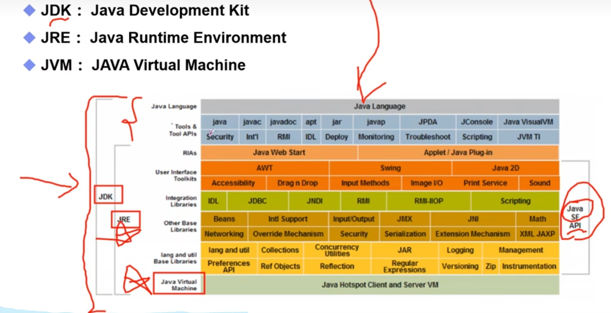

JVM/JRE/JDK 基础

Hello World 入门程序
查看更多示例
public class HelloWorld {
public static void main(String[] args) {
System.out.println("Hello, World!");
}
}
基本数据类型
- byte（字节型，1字节）
- short（短整型，2字节）
- int（整型，4字节）
- long（长整型，8字节）
- float（单精度浮点型，4字节）
- double（双精度浮点型，8字节）
- char（字符型，2字节）
- boolean（布尔型，1位）
// 基本数据类型声明示例
byte b = 10;
short s = 20;
int i = 30;
long l = 40L; // 长整型需加L后缀
float f = 5.5f; // 浮点型需加f后缀
double d = 6.6;
char c = 'A';
boolean bool = true;
数值的进制表示
- 二进制：前缀 0b
- 八进制：前缀 0
- 十进制：默认无前缀
- 十六进制：前缀 0x
int binary = 0b1010; // 二进制，值为10
int octal = 012; // 八进制，值为10
int decimal = 10; // 十进制，值为10
int hex = 0xA; // 十六进制，值为10
浮点数精度问题
舍入误差示例
double a = 0.1;
double b = 0.2;
double c = a + b; // 结果不是0.3，而是0.30000000000000004
浮点数值比较陷阱
float f1 = 1000000000000000f;
float f2 = 999999999999999f;
System.out.println(f1 == f2); // 输出true（精度丢失导致相等）
注意：银行、金融等高精度业务场景，需使用 BigDecimal 工具类，避免浮点数精度问题。
数据类型转换
强制类型转换
// 1. int -> byte
int i = 100;
byte b = (byte) i; // 强制转换为byte类型
// 2. double -> int（小数部分截断）
double d = 9.99;
int num = (int) d; // 结果为9
// 3. char -> int（转换为Unicode值）
char ch = 'A';
int charVal = (int) ch; // 结果为65
// 4. 溢出示例
int overflowInt = 128;
byte overflowByte = (byte) overflowInt; // 结果为-128（byte范围：-128~127）
自动类型转换（隐式转换）
byte b = 10;
int i = b; // 小范围类型自动转换为大范围类型，无精度丢失
Unicode 字符表示
char ch = '\u0041'; // Unicode编码表示字符'A'
System.out.println(ch); // 输出A
转义字符
// 1. 路径中的反斜杠（需双写）
String path = "C:\\Users\\Username\\Documents";
System.out.println(path); // 输出C:\Users\Username\Documents
// 2. 常用转义字符
System.out.println("Hello,\nWorld!"); // 换行符（\n），输出两行
System.out.println("She said, \"Hello!\""); // 双引号转义（\"），输出She said, "Hello!"
整数运算溢出问题
// 溢出示例
int money = 1000000000;
int total = money * 5; // 结果为-1794967296（超出int范围导致溢出）
// 正确写法（先转换为大范围类型）
long correctTotal = money * (long) 5; // 避免溢出，结果为5000000000
变量与常量
变量分类
class MyClass {
static int staticVar = 10; // 静态变量（类变量），属于类本身
int instanceVar = 20; // 实例变量（非静态变量），属于对象
void myMethod() {
int localVar = 30; // 局部变量，仅方法内有效（需手动初始化）
}
}
常量（final 修饰）
final int CONSTANT_VAR = 100; // 常量：值不可修改，命名全大写+下划线分隔
Java 命名规范
- 类名：Pascal命名法（每个单词首字母大写），如 MyClassName
- 方法名/变量名：驼峰命名法（首字母小写，后续单词首字母大写），如 myMethodName
- 常量名：全大写+下划线分隔，如 CONSTANT_VALUE
运算符
算术运算符
- 加法（+）、减法（-）、乘法（*）、除法（/）、取模（%）
赋值运算符
- 简单赋值（=）、加法赋值（+=）、减法赋值（-=）
- 乘法赋值（*=）、除法赋值（/=）、取模赋值（%=）
比较运算符
- 等于（==）、不等于（!=）、大于（>）、小于（<）
- 大于等于（>=）、小于等于（<=）
逻辑运算符
- 逻辑与（&&）、逻辑或（||）、逻辑非（!）
位运算符
- 按位与（&）、按位或（|）、按位异或（^）、按位取反（~）
- 左移（<<）、右移（>>）、无符号右移（>>>）
三元运算符（条件运算符）
- 格式：条件表达式 ? 表达式1 : 表达式2
包（Package）与项目结构
包的定义与作用
package com.example.myapp; // 包名：小写，反向域名规则
- 组织类和接口，避免命名冲突
- 控制类的访问权限
- 提升代码可维护性和可读性
常见项目结构
1. 小型单体项目（非Maven）
myapp/
├── src/ // 源代码目录
│ └── com/example/myapp/
│ ├── Main.java
│ ├── utils/ // 工具类
│ │ └── Helper.java
│ └── models/ // 实体类
│ └── User.java
├── lib/ // 依赖库（.jar）
│ └── external-library.jar
├── resources/ // 资源文件
│ └── config.properties
└── bin/ // 编译后字节码（.class）
└── com/example/myapp/
├── Main.class
├── utils/
│ └── Helper.class
└── models/
└── User.class
2. Maven 管理的项目
myapp/
├── src/
│ ├── main/ // 主代码
│ │ ├── java/
│ │ │ └── com/example/myapp/
│ │ │ ├── Main.java
│ │ │ ├── utils/
│ │ │ │ └── Helper.java
│ │ │ └── models/
│ │ │ └── User.java
│ │ └── resources/ // 主资源
│ │ └── config.properties
│ └── test/ // 测试代码
│ ├── java/
│ │ └── com/example/myapp/
│ │ └── MainTest.java
│ └── resources/ // 测试资源
│ └── test-config.properties
├── pom.xml // Maven配置文件
└── target/ // 编译输出目录
├── classes/ // 主类编译结果
└── test-classes/ // 测试类编译结果
3. 带前端的框架项目（如Spring Boot）
myapp/
├── src/
│ ├── main/
│ │ ├── java/
│ │ │ └── com/example/myapp/
│ │ │ ├── Main.java
│ │ │ ├── controllers/ // 控制器
│ │ │ │ └── UserController.java
│ │ │ ├── services/ // 服务层
│ │ │ │ └── UserService.java
│ │ │ └── models/ // 实体层
│ │ │ └── User.java
│ │ └── resources/
│ │ ├── static/ // 静态资源（CSS/JS/图片）
│ │ │ ├── css/
│ │ │ │ └── styles.css
│ │ │ ├── js/
│ │ │ │ └── scripts.js
│ │ │ └── images/
│ │ │ └── logo.png
│ │ └── templates/ // 页面模板
│ │ └── index.html
│ └── test/
│ ├── java/
│ │ └── com/example/myapp/
│ │ └── UserServiceTest.java
│ └── resources/
│ └── test-config.properties
├── pom.xml
└── target/
├── classes/
└── test-classes/
4. 分布式项目结构
myapp/ // 父项目
├── service-user/ // 用户服务模块
│ ├── src/
│ │ ├── main/
│ │ │ └── com/example/serviceuser/
│ │ │ └── UserService.java
│ │ └── test/
│ │ └── com/example/serviceuser/
│ │ └── UserServiceTest.java
│ ├── pom.xml
│ └── target/
├── service-order/ // 订单服务模块
│ ├── src/
│ │ ├── main/
│ │ │ └── com/example/serviceorder/
│ │ │ └── OrderService.java
│ │ └── test/
│ │ └── com/example/serviceorder/
│ │ └── OrderServiceTest.java
│ ├── pom.xml
│ └── target/
└── pom.xml // 父项目POM（统一管理依赖/版本）